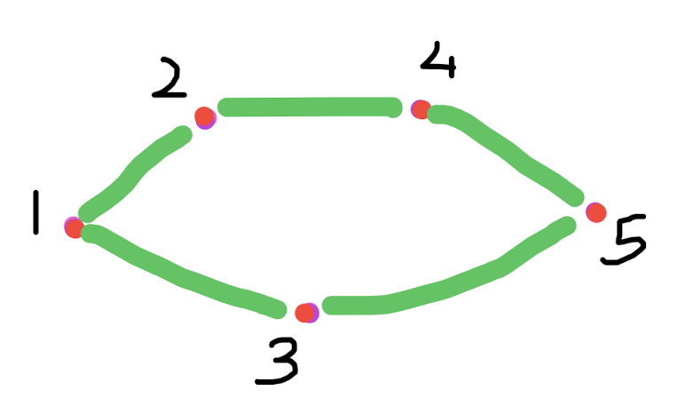
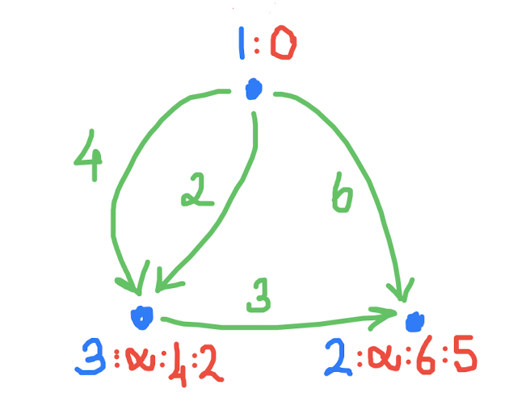
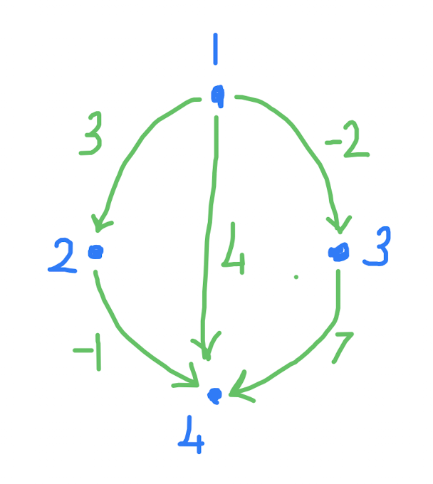
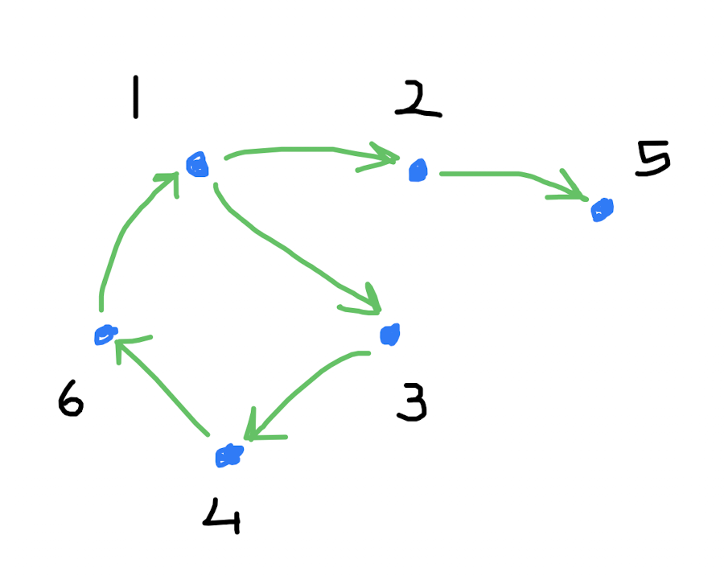
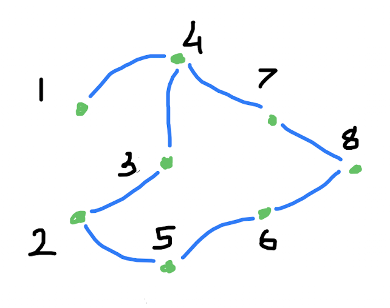

Fen Lisesi için C++ ve algoritma
Programlamaya
ve Algoritmalara
Keyifli Bir Başlangıç
Altı bölüm, yirmi dört çalışan program ve bir sürü soru.
Yalnız da okunur, ama ikili daha hızlı.





derste tahtaya
çizdiklerimizden
Bülent Başaran
CC BY-SA 4.0 · kod MIT
github.com/bulent2k2/cpp_ogreniyoruz